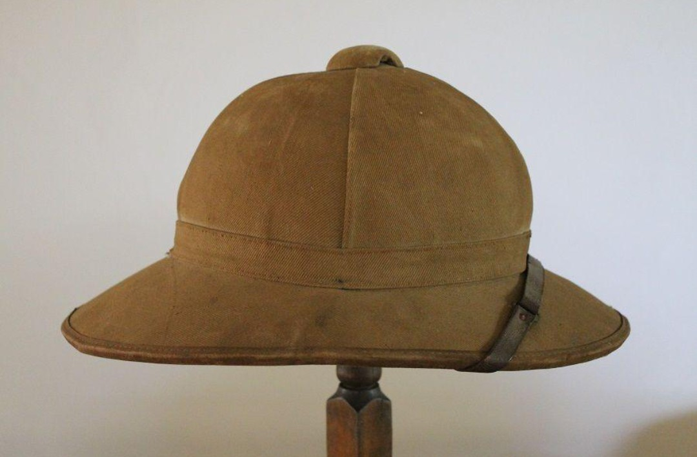
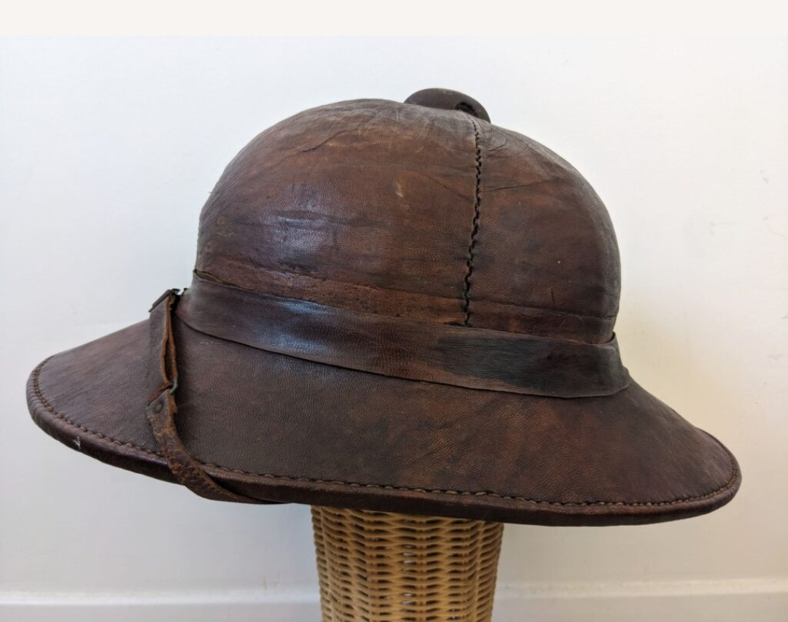

Conçu pour les troupes françaises opérant dans les régions chaudes, le casque colonial modèle 1931 est léger, ventilé et recouvert de toile. Il protège efficacement du soleil et accompagne les tirailleurs, spahis et troupes coloniales dans les campagnes d’Afrique du Nord, d’Indochine et d’Afrique équatoriale.

Plus rare que la version sable, le casque colonial en cuir brun est typique des unités d’Indochine et de certaines formations coloniales. Son aspect plus sombre et sa patine naturelle en font une pièce très recherchée.
Porté durant l’entre-deux-guerres et la Seconde Guerre mondiale, ce casque est emblématique des troupes coloniales françaises. On le retrouve dans les unités d’Afrique du Nord, d’Afrique équatoriale, d’Indochine, ainsi que chez les tirailleurs et spahis.